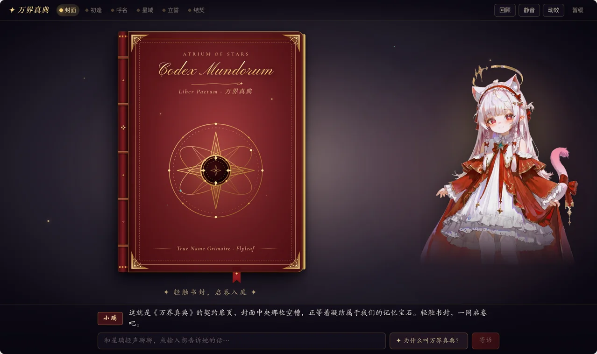
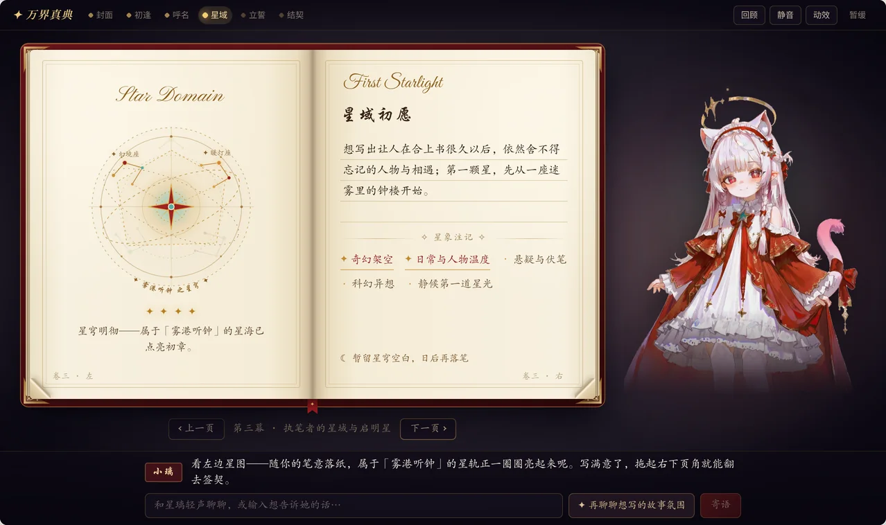
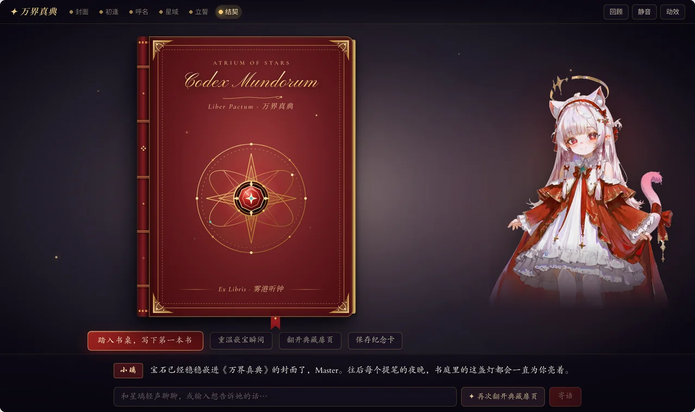
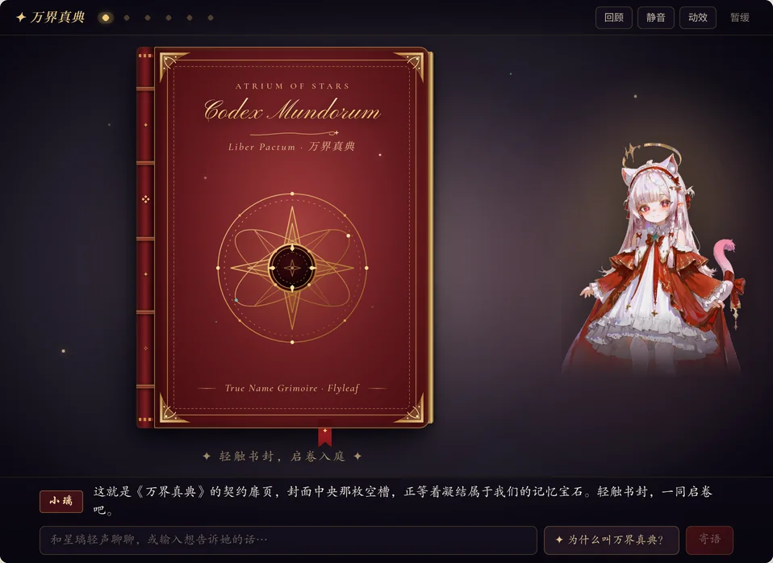
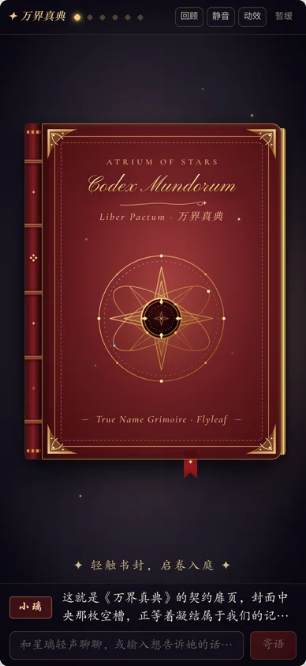
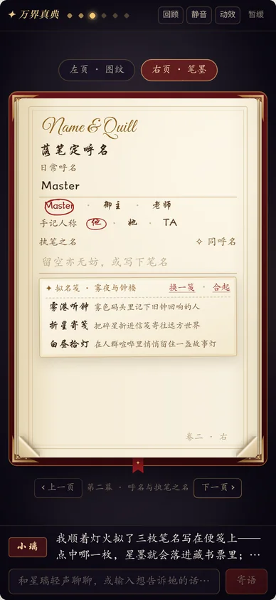
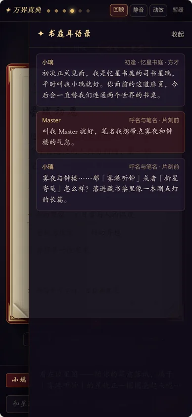

第 3 轮：星璃「真名契约仪式」18 项精细化打磨与终稿评审
第 3 轮 18 项精细化重做后的全流程视觉与交互质感，是否达到正式定稿标准？
推荐 A 认可定稿：第 2 轮提出的 18 项改进已全部落地，桌面 / 960 / 390 三档实测零重叠、零裁切且全量类型检查通过，可锁定本版为正式 Spec 与全身 7 差分立绘生图基线。
第 0 幕 · 品牌猫猫徽记与星案邀约
第 1 幕 · 英文花体精装封面、收薄书脊与右侧星璃上半身立绘

第 1 幕 · 扉页《初逢 · 忆星书庭》（花体英文字迹与零闪跳首帧）
第 2 幕 · 重绘巴洛克拱门藏书票 + 去 UI 化呼名与折耳拟名笺
第 3 幕 · 5 阶点亮星域图 + 纯纸墨星象注记笺纸

第 4 幕 · 夹页羊皮纸契约书、精修双人花体签名与二段火漆入口
第 5 幕 · 契约鉴证录与凝结记忆宝石
终幕 · 合上《万界真典》，宝石稳稳嵌印封面中央星环

二次打开 · 典藏契约档案与真名誓约留存
对话回顾 · 右侧「书庭耳语录」抽屉
A 认可定稿，转入 Spec 与立绘生图
整体拟真装帧、花体字形、右侧上半身立绘构图、去 UI 化手账页与结契流程已达定稿标准，可进入正式 Spec 与 7 差分立绘生产。
B 主体满意，个别细节再修一轮
整体方向与质感认可，但仍有局部构图、字形、节奏或文案希望继续精修（在备注写明幕次与意见）。
C 仍有结构级方向需重做
对某幕的交互范式、舞台布局或视觉风格还有结构级调整想法（在备注写明期望方向）。
第 4 幕“先倾倒红蜡再按压铜章”二段火漆、成契魔法特效与实机动效节奏是否满意？
推荐 A 认可二段火漆与动效节奏：彻底废弃长按读条，改由拖放/轻点融蜡勺倾倒绯红暖蜡凝泊、再移动/按压黄铜星印落印并触发星轨金粉共鸣；翻封面镜像居中、跟手拖拽翻页、放慢后的星墨书写与 VSync 60fps 帧率上限均可在 Component Lab（ContractCeremonyWindow 场景 interactive）实机试玩确认。
| 动效与交互项 | 第 3 轮实机表现 | Lab 试玩触发方式 |
|---|---|---|
| 对称翻/合封面与同步居中 | 点击封面展开时绕书脊 3D 翻开并同步平移至舞台居中，合回书封完全镜像逆向回位 | interactive 场景点击封面启卷；第 5 幕合书嵌宝观察逆向合封 |
| 鼠标拖拽跟手翻页 + 下一页空白渐画 | 右下/左下书角支持指针拖拽跟手翻页，翻页时长显著放慢；下一页初始空白，翻定后缓缓浮现书画与文字 | 第 1–3 幕按住书角拖拽翻页，或点书外底栏「下一页」 |
| 从容星墨书写与打字机节奏 | 全书手写正文与底部 48px 星璃字幕条同步放慢逐字节拍；英文标题使用离线古典花体逐笔浮现 | 翻页至第 1–3 幕观察首帧稳定显现，或向星璃寄语查看底部打字机 |
| 第 4 幕夹页展卷 + 二段火漆 + 成契魔法 | 进入第 4 幕时羊皮纸自上而下展卷铺开；拖起或轻点融蜡勺倾倒暖蜡成泊，再按压黄铜星印落印，触发星轨旋转光环与金粉符文共鸣 | 进入第 4 幕按底部「壹 → 贰」引导完成滴蜡与盖章 |
| VSync 60fps 统一时钟 | animation-clock.ts 统一按 requestAnimationFrame + performance.now() delta-time 驱动并限频 60fps，高刷屏下节奏恒定不抖动 |
在 120Hz/144Hz 屏幕全程操作，核查动画流畅度与节拍稳定性 |
A 认可二段火漆与实机动效节奏
二段式滴蜡盖章手感、展卷与翻页速度、星墨打字机节拍与成契魔法特效氛围均合适，保持当前方案。
B 喜欢二段火漆，微调动效速度或特效强度
认可交互流程，希望调整翻页/打字机速度或微调成契星轨金粉光效强度（备注写明方向）。
C 调整火漆交互手势或表现
对倾倒红蜡、印章按压手势或蜡封造型有其他具体想法（备注写明）。
多视口实测复核（960×700 与 390×844，不用答）
960×700 · 封面与右侧星璃立绘

960×700 · 第 2 幕重绘藏书票与呼名页
960×700 · 第 4 幕夹页契约与二段火漆
390×844 · 精装封面

390×844 · 第 2 幕单页切换与拟名笺

390×844 · 第 4 幕夹页契约与二段火漆
390×844 · 对话回顾抽屉

已按第 2 轮 18 项反馈逐条落地（不用答）
| # | 第 2 轮开发者要求 | 第 3 轮已落改动 |
|---|---|---|
| 1 | 立绘回归右侧并放大为上半身 | 星璃移回书本右侧并替换洁净抠底素材，重构为上半身/大半身柔和渐隐构图，彻底消除旧图左右裁切硬边。 |
| 2 | 翻封面与合封面动画丝滑对称且边翻边居中 | 重构封面开合 3D 联动曲线，翻开同步将书本平滑移至舞台居中，合书采用镜像逆向轨迹收束回位。 |
| 3 | 封面与全书全元素动画化 | 补齐封面悬停光泽、星环慢旋、黄铜角饰与全书各可交互元素的平滑过渡动画，消除突兀跳变。 |
| 4 | 书封以英文为主 | 主标题与副题改为英文主导（ATRIUM OF STARS / Codex Mundorum / True Name Grimoire · Flyleaf），中文退为细微辅铭。 |
| 5 | 华丽英文手写花体 | 随草稿离线打包 SIL OFL 古典花体 Pinyon Script、Great Vibes 与 Cormorant Garamond（ceremony-fonts.css），覆盖封面、眉题与签名。 |
| 6 | 收薄书脊视觉厚度 | 收窄封面视角书脊宽幅并柔化立体高光与阴影比例，使精装书体量更修长雅致。 |
| 7 | 修复扉页闪烁跳过问题 | 重构第 1 幕入场与星墨绘制状态机时序，根治打开封面后扉页一闪而过的问题，首帧稳定落墨。 |
| 8 | 鼠标拖拽拟真翻页 + 下一页空白渐画 + 放慢翻页 | 支持指针抓起右下/左下书角跟手拖拽 3D 翻页并显著放慢翻页时长；下一页在翻页过程中保持空白，落定后再由空白缓缓书画浮现。 |
| 9 | 清除无用 chrome UI | 移除立绘下方“温柔迎客”情绪标牌与书本下方“合回封面”等冗余控件，只保留必要导览与主交互。 |
| 10 | 放慢打字机节奏 | 放慢全书中文星墨正文与底部 48px 星璃字幕条的逐字步频，呈现更从容的书写韵律。 |
| 11 | 帧率控制与垂直同步核查 | 新增 animation-clock.ts 统一接入原生 requestAnimationFrame VSync、performance.now() delta-time 与 60fps 渲染限频，替换高频定时器并消除重排。 |
| 12 | 重绘第 2 幕（呼名）左页 | 重绘拱门卷草纹饰、烫金花体 Ex Libris、羽笔墨瓶插画与双线花边框，大幅提升藏书票典藏质感。 |
| 13 | 第 2 幕右页进一步去 UI 感 | 弱化软件表单与操作提示词，改用纯手账纸墨底线、朱笔手绘勾圈与纸边折耳「拟名笺」呈现笔名建议。 |
| 14 | 第 3 幕（星域）右页进一步去 UI 感 | 保留 5 阶动态点亮星域图，右页弱化“轻点星象眉批”控件提示，改以淡金横格笺纸与轻墨「星象注记」融合纸面。 |
| 15 | 第 4 幕契约书展开动画 | 为书页间夹入的纵向羊皮纸契约书制作自上而下的拟真展卷铺展动画，配合条款与双人落款次序显现。 |
| 16 | 取消长按火漆，升级“先滴蜡再按压”二段仪式 | 彻底废弃长按读条，重做 WaxSealControl.vue：先拖起/轻点融蜡勺倾倒绯红暖蜡成泊，再移动/按压黄铜星印烙下星璃徽记。 |
| 17 | 精修 Master 与星璃双人签名 | 以古典铜版与连笔花体结合重写 Astria Lyra 与默认 Master 署押路径，告别潦草线条。 |
| 18 | 结契后契约书魔法特效 | 落印后在羊皮纸与火漆周身激发星轨旋转光环、金粉浮散符文与柔和共鸣光晕，并同步点亮结契回执。 |
仍待正式落地阶段补齐的素材与平台依赖（不用答）
| 类别 | 待补项 | 当前草稿状态 | 正式落地依赖 |
|---|---|---|---|
| 立绘差分 | 按 D2 生成星璃 7 张全身透明立绘差分（舞台按场景取上半身/全身构图） | 已替换为洁净抠底的星璃母版立绘 lyra-master-cutout.webp（无硬边） |
本轮定稿后单独立项生图 |
| 中文字体 | 随包离线分发的中文字体手写子集（英文古典花体 Pinyon Script / Great Vibes / Cormorant Garamond 已完成离线打包） |
本机楷体手写回退栈（LXGW WenKai / STKaiti / Kaiti SC） |
正式插件引入开源可商用中文字体子集打包 |
| 声景音频 | 真实 Foley 纸页、羽笔、滴蜡、风铃与宝石嵌合音效（可选） | Web Audio API 程序合成克制音效，默认静音可开 | 可沿用零体积合成音或替换为实录短音频 |
| 平台与中间人 | nbook.bots、bot://memory/、ToolContext.ask() 与隐身 ceremony.* 舞台工具 |
草稿纯内存态 + 本地剧本回执 + 前端导出纪念卡 PNG | 依赖 w00043（t06 主对话 / t09 Bot 记忆）落地后另起 Spec 与实现计划 |
已定（2026-11-18 设计定稿 + R1 D1–D5 + R2 D6–D7）
- 整体基调（D1）：暗夜星案、赤金精装书、书侧星璃陪伴与底部极轻字幕条；全书手写体无 TTS，台词同步星墨浮现。
- 立绘规格（D2）：后续 7 差分按全身立绘生成，舞台摆放时按场景取上半身或全身呈现。
- 签字与落印（D3 + R2 #16）：第 4 幕默认花体
Master落款（支持直接提笔手写、上传签名图或切换朱砂印章）；火漆已按 R2 意见从长按升级为“先滴蜡再按压”二段交互。 - V1 主持范围（D4）：V1 仅开放星璃自主持，不启用 V2「真典司仪」宣礼条，代码预留接口扩展位。
- 响应式与回顾（D5 + D7）：960×700 / 390×844 窄屏单页切换与右侧「书庭耳语录」对话回顾抽屉布局。
- 第 4 幕版式（D6）：采用书页间夹入纵向羊皮纸契约书、司书星璃与执笔者并肩署押方案。
- 平台归属与即时生效：产物归属
bot://memory/，仪式结束后主对话完整保留仪式上下文当轮自然改口，下次 compaction 自动刷新常驻称呼；二次打开分流至典藏契约书。